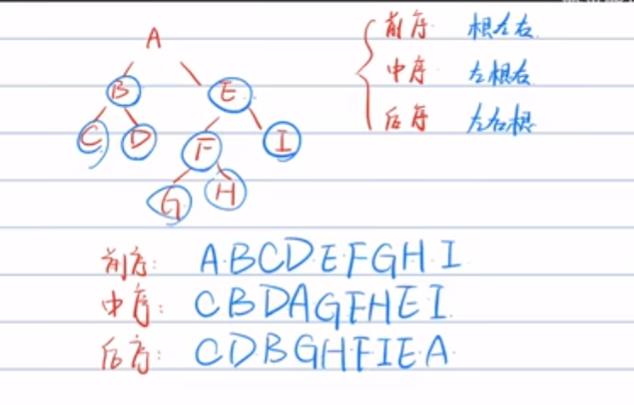

读书-labuladong的算法⼩抄
读 《labuladong的算法⼩抄》
大学时候也没上过算法课，学C++ 也只是浅尝则止。工作后也是依工作需要，复杂点的就是对树结构的遍历，以达到对数据增删改查。但是没去总结，总感觉有些更加简单、更加明确的方式去处理，让代码写的 更加清晰
现在处理项目空挡期，事不多 ，阅读阅读，豁然开朗，满满都是干货，整理下作者的一些总结，方便后面看到时候总结。其实作者全文都是干货，已经精简的不能在精简了，原文地址: https://github.com/labuladong/fucking-algorithm
宏观概览：
数据结构的存储⽅式只有两种：数组（顺序存储）和链表（链式存储）。
至于散列表、栈、队列、堆、树、图等等各种数据结构，底层存 储⽆⾮数组或者链表
数组，连续存储，就会有扩容问题，删除和添加需要搬移后面数据保持连续，时间复杂度O(n)
链表, 不连续存储，指针指向下⼀个元素的位置，操作指针即可删除该元素或 者插⼊新元素，时间复杂度 O(1)。存储指针需要空间
内容
框架思维，实际就是些根本套路
- 数组迭代：线性迭代
1 | |
- 链表迭代：线性迭代 、递归迭代
1 | |
二叉树
1
2
3
4
5
6
7void traverse(TreeNode root) {
// 前序遍历
traverse(root.left)
// 中序遍历
traverse(root.right)
// 后序遍历
}回溯算法 (尝试走，记录步伐，走不通就回头的算法)
1
2
3
4
5
6
7
8
9result = []
def backtrack(路径, 选择列表):
if 满⾜结束条件:
result.add(路径)
return
for 选择 in 选择列表:
做选择
backtrack(路径, 选择列表)
撤销选择⼆分搜索
1
2
3
4
5
6
7
8
9
10
11
12
13
14
15
16
17
18
19
20
21
22
23
24
25
26
27
28
29
30
31
32
33
34
35
36
37
38
39
40
41
42
43
44
45
46
47
48
49
50
51
52
53
54
55
56
57
58// 注意：javascript 代码由 chatGPT🤖 根据我的 java 代码翻译，旨在帮助不同背景的读者理解算法逻辑。
// 本代码还未经过力扣测试，仅供参考，如有疑惑，可以参照我写的 java 代码对比查看。
var binary_search = function(nums, target) {
var left = 0, right = nums.length - 1;
while(left <= right) {
var mid = left + Math.floor((right - left) / 2);
if (nums[mid] < target) {
left = mid + 1;
} else if (nums[mid] > target) {
right = mid - 1;
} else if(nums[mid] === target) {
// 直接返回
return mid;
}
}
// 直接返回
return -1;
};
var left_bound = function (nums, target) {
var left = 0, right = nums.length - 1;
while (left <= right) {
var mid = left + Math.floor((right - left) / 2);
if (nums[mid] < target) {
left = mid + 1;
} else if (nums[mid] > target) {
right = mid - 1;
} else if (nums[mid] === target) {
// 别返回，锁定左侧边界
right = mid - 1;
}
}
// 判断 target 是否存在于 nums 中
// 此时 target 比所有数都大，返回 -1
if (left === nums.length) return -1;
// 判断一下 nums[left] 是不是 target
return nums[left] === target ? left : -1;
}
var right_bound = function (nums, target) {
var left = 0, right = nums.length - 1;
while (left <= right) {
var mid = left + Math.floor((right - left) / 2);
if (nums[mid] < target) {
left = mid + 1;
} else if (nums[mid] > target) {
right = mid - 1;
} else if (nums[mid] === target) {
// 别返回，锁定右侧边界
left = mid + 1;
}
}
// 此时 left - 1 索引越界
if (right < 0) return -1;
// 判断一下 nums[left] 是不是 target
return nums[right] === target ? right : -1;
}滑动窗口
1
2
3
4
5
6
7
8
9
10
11int left = 0, right = 0;
while (right < s.size()) {
// 增⼤窗⼝
window.add(s[right]);
right++;
while (window needs shrink) {
// 缩⼩窗⼝
window.remove(s[left]);
left++;
}
}BFS
1
2
3
4
5
6
7
8
9
10
11
12
13
14
15
16
17
18
19
20
21
22
23
24
25
26
27
28// 计算从起点 start 到终点 target 的最近距离
int BFS(Node start, Node target) {
Queue<Node> q; // 核心数据结构
Set<Node> visited; // 避免走回头路
q.offer(start); // 将起点加入队列
visited.add(start);
int step = 0; // 记录扩散的步数
while (q not empty) {
int sz = q.size();
/* 将当前队列中的所有节点向四周扩散 */
for (int i = 0; i < sz; i++) {
Node cur = q.poll();
/* 划重点：这里判断是否到达终点 */
if (cur is target)
return step;
/* 将 cur 的相邻节点加入队列 */
for (Node x : cur.adj()) {
if (x not in visited) {
q.offer(x);
visited.add(x);
}
}
}
/* 划重点：更新步数在这里 */
step++;
}
}
常见算法类型
动态规划（dynamic programming）
- 动态规划一般形式就是求最值，核心问题就是穷举，但是穷举一般存在重叠子问题，所以需要备忘录或者DP table优化穷举，避免重复运算
- 列出状态方程
- 自顶向下，原始问题分解为很小的问题，最终触底，逐层返回答案，递归解法。 可以改为迭代解决，自底向上，通过缓存去缓存结果，自底到上去解决
- 作者举例斐不拉契数列，常规递归解决办法 时间是O(2^N) ,加备忘录之后是O(N),改为自底向上，空间复杂度直接变为O(1)
回溯算法
解决⼀个回溯问题，实际上就是⼀个决策树的遍历过程
其核⼼就是 for 循环⾥⾯的递归，在递归调⽤之前「做选择」，在递归调⽤之后「撤销选择」
1、路径：也就是已经做出的选择。
2、选择列表：也就是你当前可以做的选择。
3、结束条件：也就是到达决策树底层，⽆法再做选择的条件。
写 backtrack 函数时，需要维护⾛过的「路径」和当前可以做的「选择列
表」，当触发「结束条件」时，将「路径」记⼊结果集。
二分查找
- left + (right - left) / 2 就和 (left + right) / 2 的结果相同，但是有效防⽌了 left 和 right 太⼤直接相加导致溢出。
- 通过已知信息尽可能多地收缩（折半）搜索空间
- 正常二分查找循环完毕后就是找不到了，循环结束 left>right
- 二分靠左查找 跳出循环
- 比所有的都大 left=num.length
- 比所有的都小 此时left是0
- 范围区间但是不存在 此时arr[left]!=val
- 二分靠右查找 二分靠右边查找 跳出循环 左指针大于右指针
- 比所有的都大 left=num.length
- 比所有的都小 此时right是-1
- 范围区间但是不存在 此时arr[right]!=val
滑动窗口
- 注意是左闭右开
双指针
- 滑动窗口见4
- 环形链表
BFS算法：（广度优先遍历（Breath First Search））
二叉树的层序遍历
DFS 不能找最短路径吗？其实也是可以的，但是时间复杂度相对⾼很多。
你想啊，DFS 实际上是靠递归的堆栈记录⾛过的路径，你要找到最短路
径，肯定得把⼆叉树中所有树杈都探索完才能对⽐出最短的路径有多⻓对不
对？⽽ BFS 借助队列做到⼀次⼀步「⻬头并进」，是可以在不遍历完整棵
树的条件下找到最短距离的。 DFS 是线，BFS 是⾯
BFS 可以找到最短距离，但是空间复杂度⾼，⽽ DFS 的空间复杂度较低
横向有个遍历 纵向也有个遍历 先纵向在横线就是深度优先 否则广度
二叉树：
前序遍历：根左右
中序遍历：左根右
后序遍历：左右根
